直接说结论
1：柯南在正常情况下仅对侦探的事情脸红，包括自己完成案件，和她人给予的正反馈
2：就是在兰强行将话题引入恋爱的时候，工藤或柯南会产生脸红。
其实仔细看就会发现，柯南在早期就是一个唯推理的人，仅仅因为青春期的悸动而对兰产生了某种情感，这和隔壁的快青说实话形成了巨大的对比，隔壁的快青是男方主动给女方准备生日惊喜，而柯南这边一定要被引入某种恋爱的暗示才意识到这一问题，而且早期的柯南甚至是带着吃瓜的心理看兰喜欢新一这件事情的，完全就是打趣的感觉，不得不说兰姐黑棋先行强行让柯南知道自己的爱也太犯规了。
1：柯南在正常情况下仅对侦探的事情脸红，包括自己完成案件，和她人给予的正反馈
2：就是在兰强行将话题引入恋爱的时候，工藤或柯南会产生脸红。
其实仔细看就会发现，柯南在早期就是一个唯推理的人，仅仅因为青春期的悸动而对兰产生了某种情感，这和隔壁的快青说实话形成了巨大的对比，隔壁的快青是男方主动给女方准备生日惊喜，而柯南这边一定要被引入某种恋爱的暗示才意识到这一问题，而且早期的柯南甚至是带着吃瓜的心理看兰喜欢新一这件事情的，完全就是打趣的感觉，不得不说兰姐黑棋先行强行让柯南知道自己的爱也太犯规了。
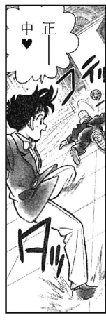
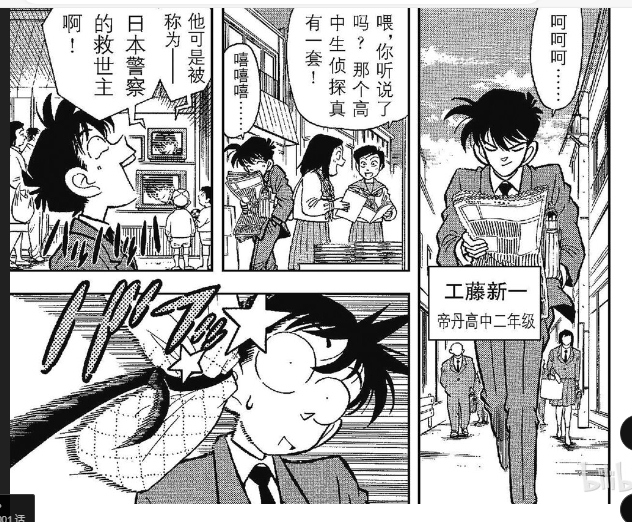
2024-03-19 11:52 | lxt370:很明显是因为侦探的事情而高兴2024-03-20 01:07 | 贴吧用户_0bDS2EM:回复 lxt370 :这种称为：我真是太强了！
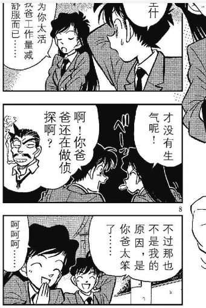
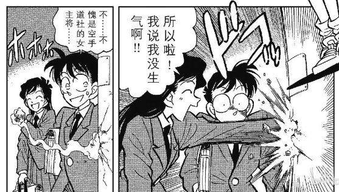
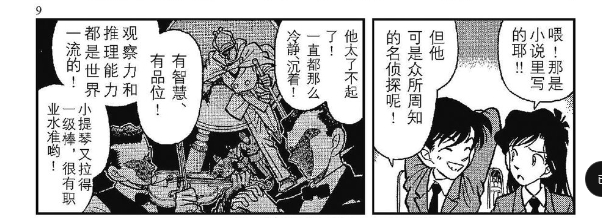
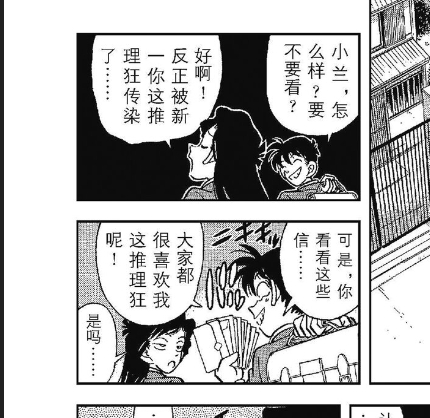
仔细看不难发现，工藤每次脸红都是提到了与侦探有关的事情的时候才会脸红，或者通过嘲讽毛利来获得自己的侦探优越感。
可以说工藤的脑子完全在推理上，对于兰基本没有很深厚的情感。
而兰则处在恋爱脑的状态想要和工藤进行情感交流，
我放出图片，大家不难发现，兰是见到了新一就开始脸红，直到新一开始讲侦探的事情。
我真的不得不怀疑，哪怕是短篇版的作品，他也想走柯哀或者新志，
青山刻意用兰的脸红的变化，体现了两人的恋爱or推理，的巨大分歧。
这么细的表现形式真的是为了体现新兰感情的和睦吗？
可以说工藤的脑子完全在推理上，对于兰基本没有很深厚的情感。
而兰则处在恋爱脑的状态想要和工藤进行情感交流，
我放出图片，大家不难发现，兰是见到了新一就开始脸红，直到新一开始讲侦探的事情。
我真的不得不怀疑，哪怕是短篇版的作品，他也想走柯哀或者新志，
青山刻意用兰的脸红的变化，体现了两人的恋爱or推理，的巨大分歧。
这么细的表现形式真的是为了体现新兰感情的和睦吗？
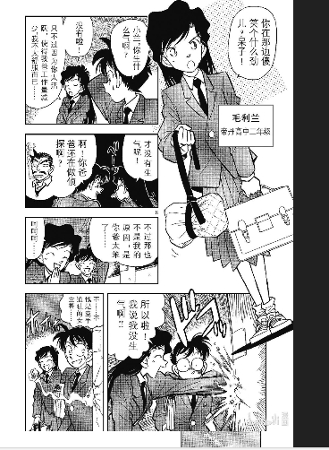

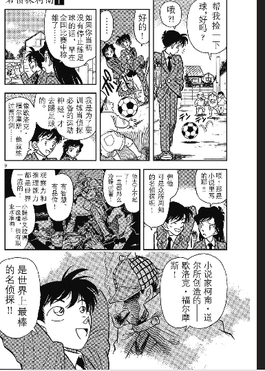
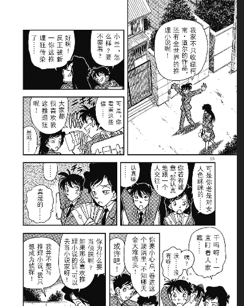
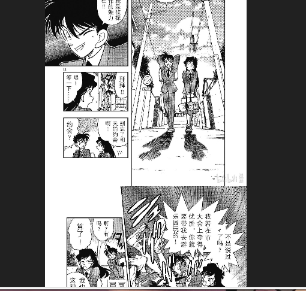
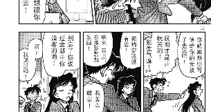
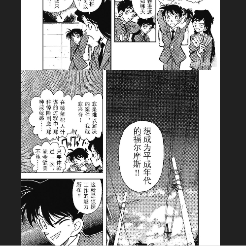
大家也可以自己回顾第一话，兰在开始侦探的话题后脸色逐渐变差直到红温。
工藤则一直沉浸在自己的侦探世界，偶尔被恋爱话题拉了出来之后，还会接着回去，
说实话这种喜欢感觉真的只能算青春期的悸动。
工藤则一直沉浸在自己的侦探世界，偶尔被恋爱话题拉了出来之后，还会接着回去，
说实话这种喜欢感觉真的只能算青春期的悸动。
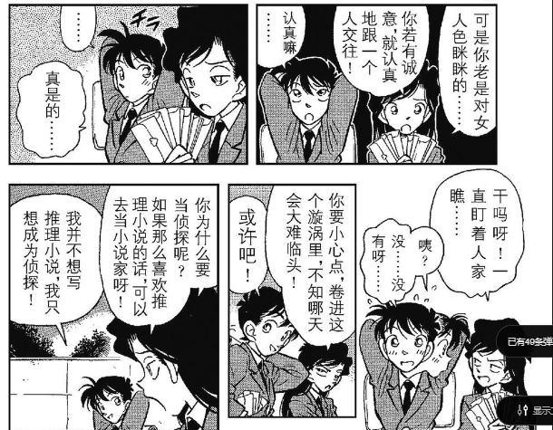
第二种脸红出现了，兰强行的将工藤引入恋爱的话题后，工藤产生了有限的青春期情感懵懂，
然后就又回到推理里去了
然后就又回到推理里去了
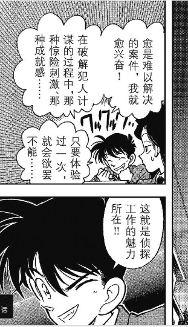
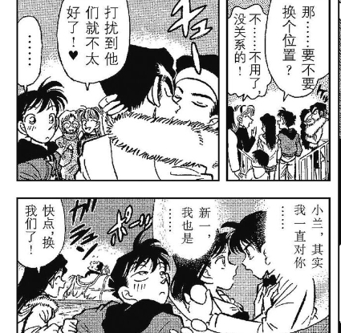
2024-03-20 01:10 | 贴吧用户_0bDS2EM:按理说这里2：1（有一个不清楚），怎么说也得少数服从多数，不要迁怒于路人（新一，小兰）；而且也就坐的开了一点罢了
在性暗示下产生了第二种脸红，但是马上又是第一种脸红了
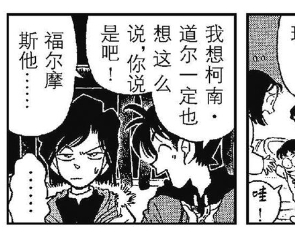
兰姐再次红温，于是她又进行了一次将新一拉入恋爱的尝试
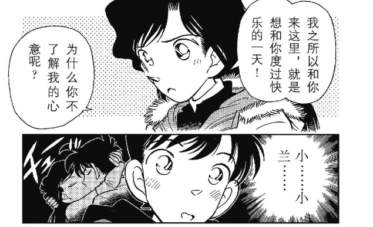
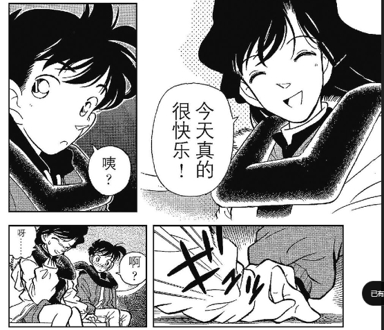
然后就又是新一侦探的脸红了，真的无语了，仅仅一话的脸红就要拉扯这么久，感觉兰和新一真的有种不太契合的感觉。
现实新一进入侦探状态，然后兰拉出来，然后再进入，然后再拉出来，然后再进入如此往复
这种没有找到问题本质的情感推进完全是无意义的空中楼阁。
现实新一进入侦探状态，然后兰拉出来，然后再进入，然后再拉出来，然后再进入如此往复
这种没有找到问题本质的情感推进完全是无意义的空中楼阁。
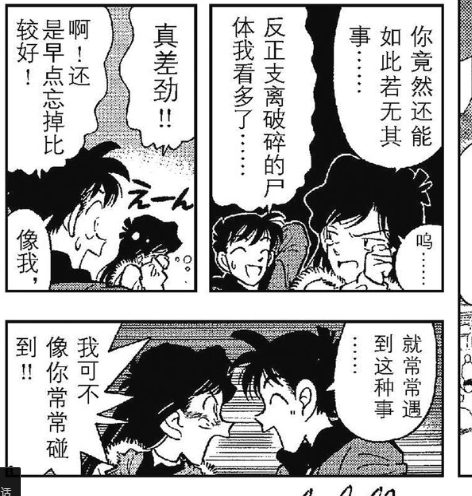
然后就是变成柯南之后的第一次脸红，也是因为推理
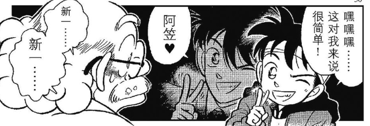
然后兰姐再次打出直球，将柯南拉入某种性暗示的脸红，虽然是为了写柯兰糖，但是这么表现是真的奇怪。
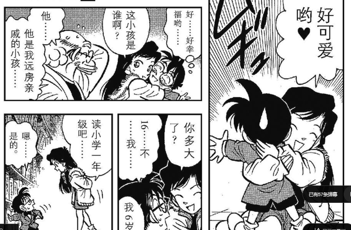
然后又是推理的脸红，难评。
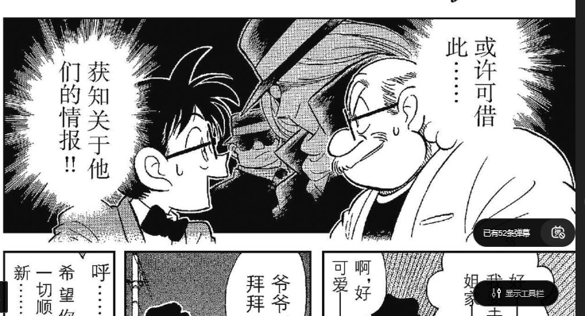
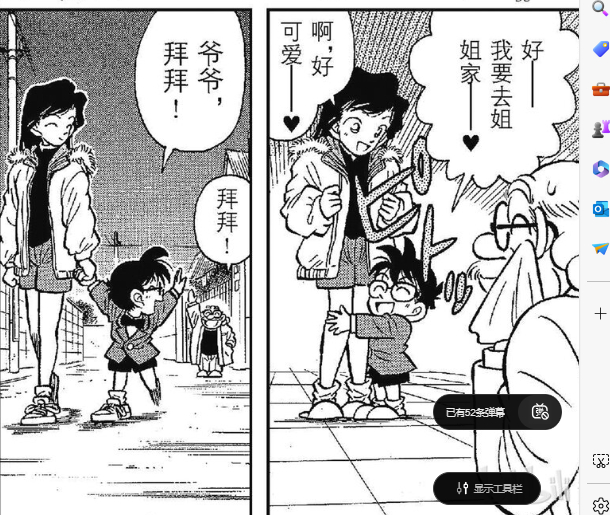
然后又是兰姐莫名奇妙的直球，真的有对小孩子讨论这种话题的人吗？
为了写柯兰糖有点抽象了吧。
为了写柯兰糖有点抽象了吧。
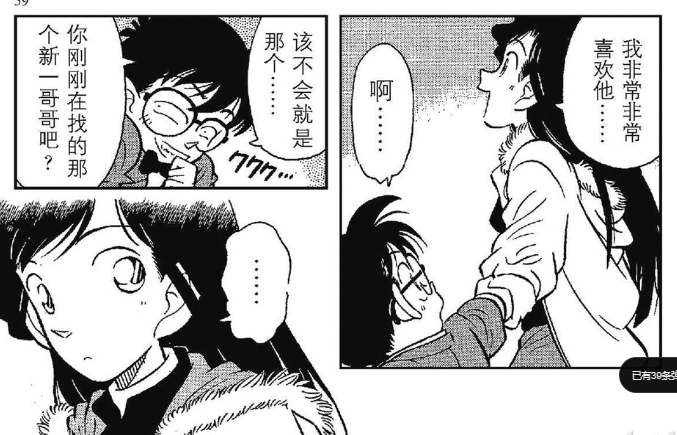
2024-03-20 01:13 | 贴吧用户_0bDS2EM:在日本，加上连载时间；应该问超级战队（同年并没有奥特曼和假面骑士）或者金属英雄；实在不行问假面超人（柯南里面那个）
最后就是柯南的第一案里的脸红了
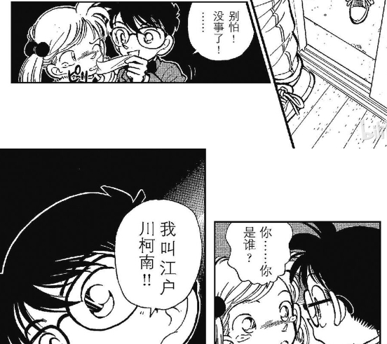
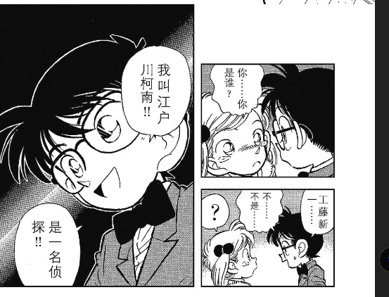
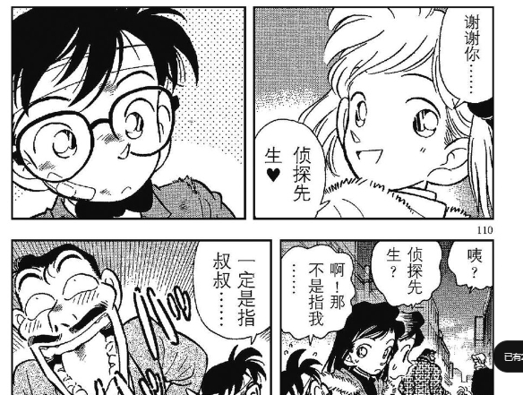
这里联系上下文很明显可以知道是作为侦探而脸红的，
这里有一个解读误区就是柯南因为小女孩的原因脸红，其实不是很对，
你柯的脸红但看外貌的话，主要还是对青年，成年女性脸红。
这里有一个解读误区就是柯南因为小女孩的原因脸红，其实不是很对，
你柯的脸红但看外貌的话，主要还是对青年，成年女性脸红。
end
顶顶，有人看嘛
顶顶，有人看嘛

赞同，他早期很多脸红都只是青春期男生正常的现象表现罢了
歪个楼，怎么讲呢，从小无论动画组多美化，我对兰从没办法从欣赏者的角度去喜欢很大原因在于兰的福利化设置。不止是73从创造者的角度福利化她，更多在于兰自己和新一，包括柯南一个小学的小男孩的相处中，她自己都在放大化她的性别倾向来达到亲密关系的达成，就很南坪。这点不适在死罗神篇达到顶点，新一和兰车里，兰别别扭扭了半天，问新一“你是不是看到我nk”了。我的妈！！！我不理解！！我觉得她自己都，，，算了，直说恶意显得有点大了。总之这里后，这个角色彻底在我这里被物化，虽然后面还有类似刻画，比如水族馆，，但我习惯了已经，甚至这种习惯带着不自觉轻蔑感。另外，我想补一个观点。因为我自己也会写一些CP的同人文（都是三次元的），我自己写的过程中经常会发现在作者给人物把基础性格设置好后，人物就会开始有自己的意志，顺着他们的意志文大部分时候才是顺的，不然就要一直打补丁来让那个角色绕路走到你想要的路线上，举个例子，我有一篇同人结局写了7版，但6版演到最后都是be,哪怕最后硬是写了he都是一股be感，所以故事线真不是作者想怎么写就怎么写的，角色在文稿里诞生后，作者其实就死了。这可能也是73满月篇让兰试水但又缩回去的可能？也是基于我自己的这点感触，所以我相信兰她是不爱侦探推理的，怎么打补丁她都不会由衷的欣赏侦探新一。也因此，我相信兰她自己角色意志里的福利倾向，就实在没办法把福利的锅都扣在73头上，然后相信兰依旧是个清清白白的纯爱天使。。。我不信，除非她在二次元依旧不曾存活。